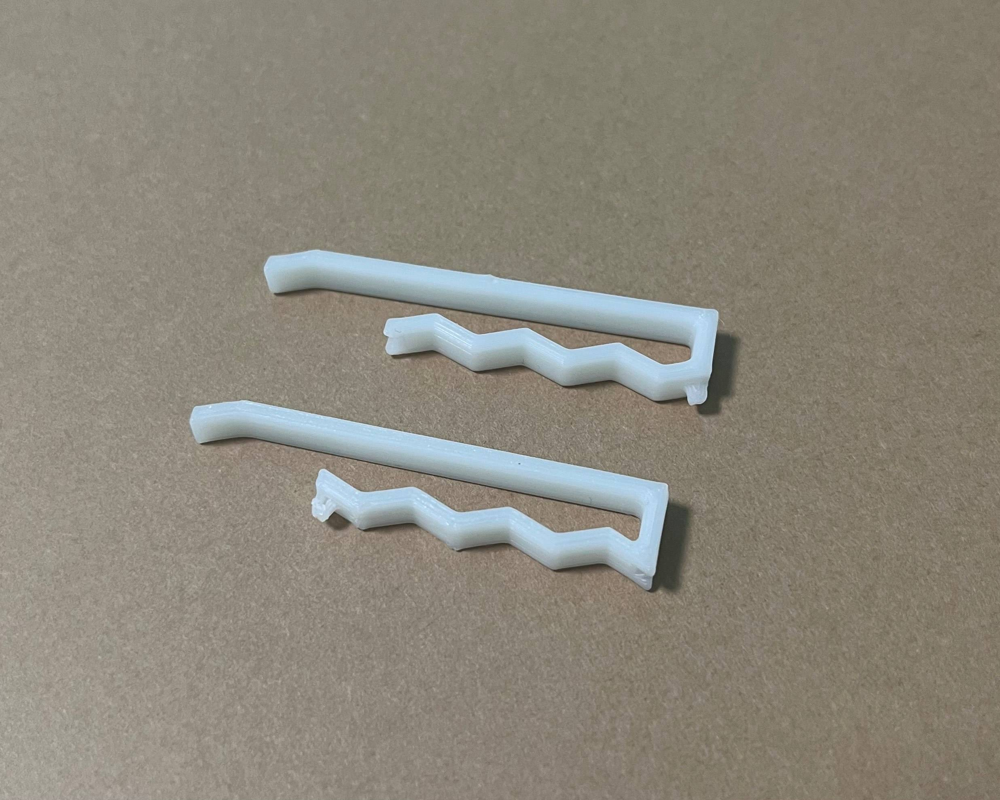
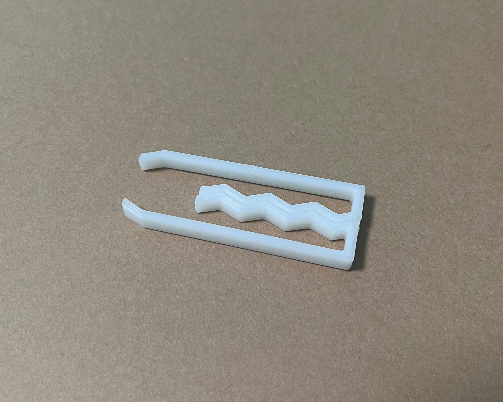
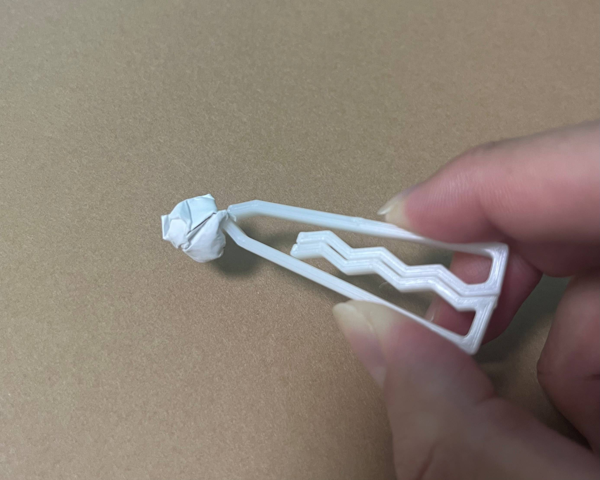
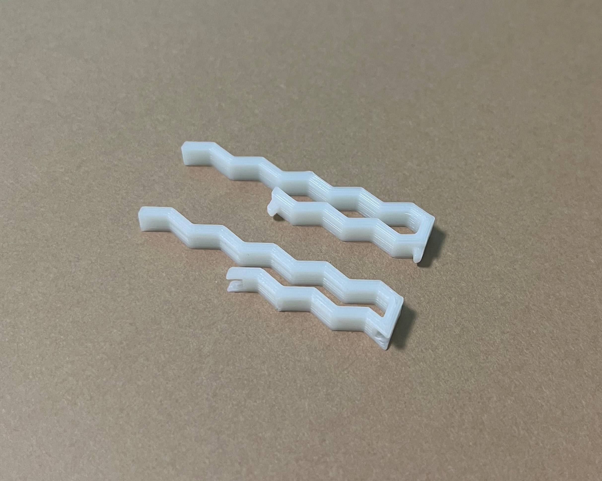
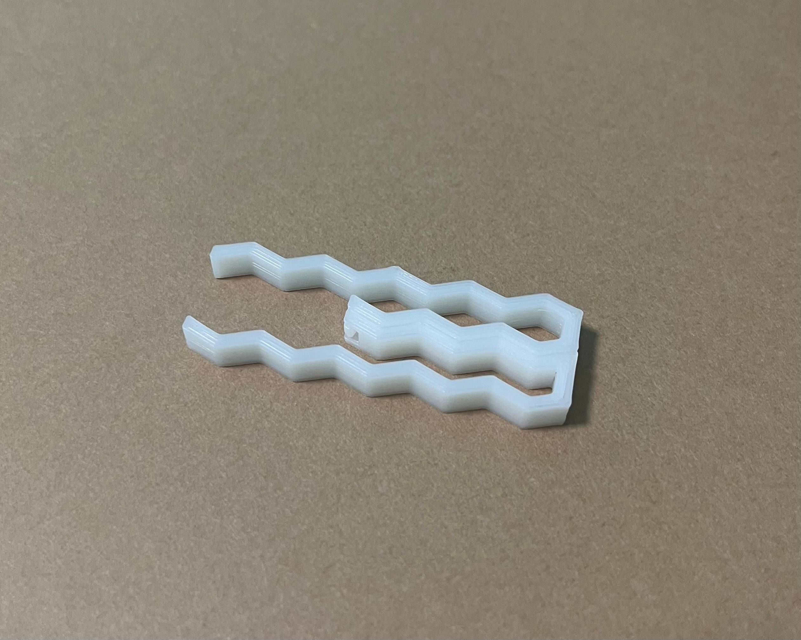
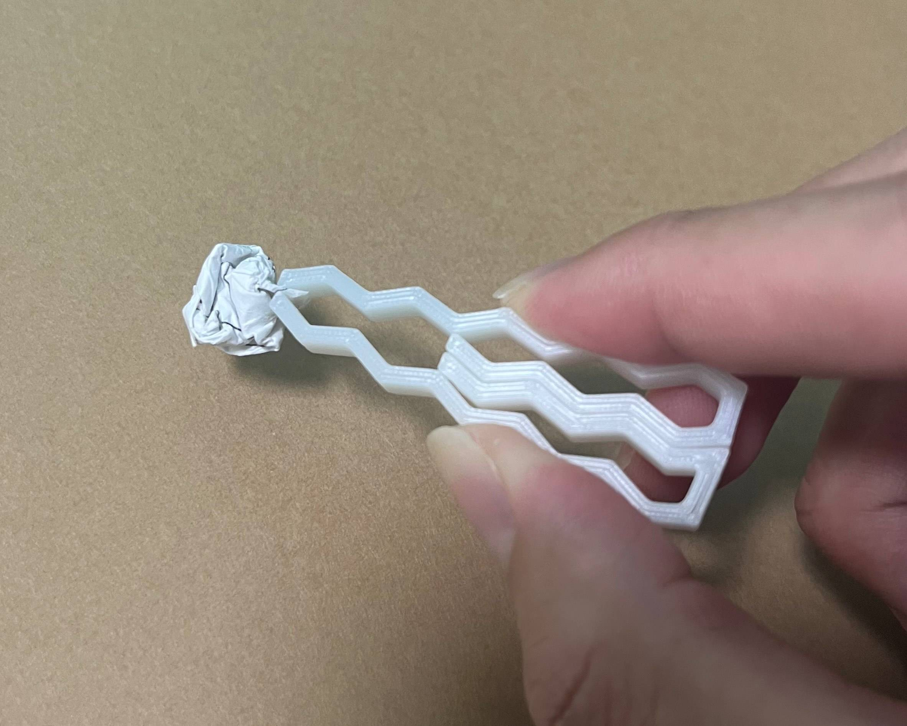

ピンセット制作課題
ヘアピン×ピンセット
ヘアピンセット
【手書きイメージ】
【考えた理由】
普段身に着けられるもの、持ち歩けるものでピンセットと合わせられそうなものを選びました。
【完成型】
パターン1
  
stlファイル
パターン2
  
stlファイル
【作品の説明】
これはピンセットとヘアピンを組み合わせたヘアピンセットです。
2つのヘアピンを組み合わせて使うことでピンセットになります。
ピン同士の接触面にそれぞれ凹凸をつけています。
このおかげで、前後左右ずれるのを防ぎます。
【作って気づいたこと】
ヘアピンの機能は幅がゆるゆるすぎてあまり引っ掛からないため機能しない。
これを改善しようと幅を狭めるとピンセットとして機能しない。